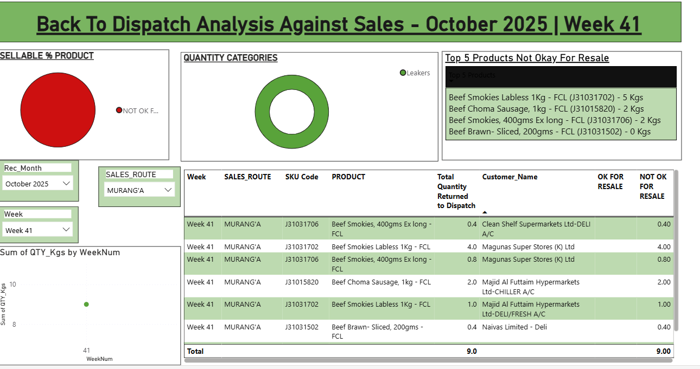
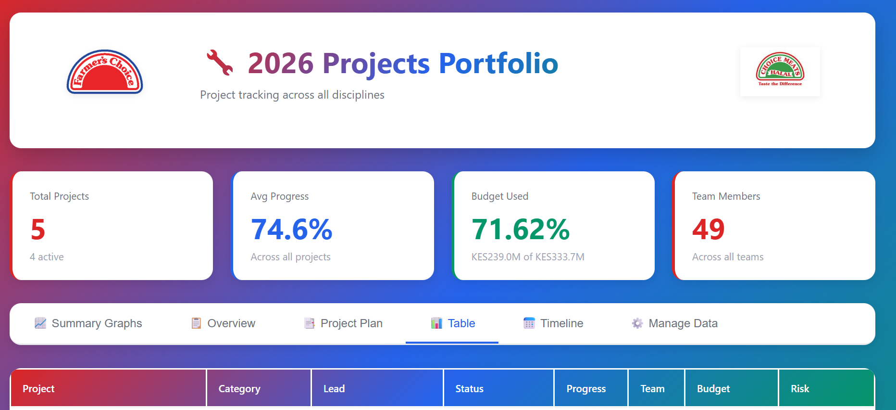

About Me
I am a Business Intelligence–focused Data Analyst with hands-on experience transforming operational, financial, and compliance data into actionable insights. I work closely with stakeholders to understand business questions, analyze data from multiple sources, and deliver clear reports and dashboards that support decision-making. My strength lies in bridging business needs with data—structuring information, identifying trends, and presenting insights in a way that drives performance improvement.
Core Skills
Featured Projects
Business Performance & KPI Analytics
Power BI • Excel (Advanced Formulas & Pivot Tables)
Analyzed operational and financial KPIs across multiple business functions to track performance against targets and identify trends, variances, and root causes of underperformance.
Cost, Budget & Variance Analysis
Power BI • Excel
Conducted budget vs. actual and trend analysis for CAPEX and OPEX data to identify cost drivers, inefficiencies, and savings opportunities.
Compliance & Quality Data Analytics
Power BI • Excel
Analyzed compliance, quality, and process-control data (including water treatment and production standards) to monitor adherence to internal and regulatory benchmarks.
Project & Delivery Analytics Dashboards
Power BI • Excel
Built analytics dashboards to track project timelines, costs, risks, and deliverables across multiple initiatives, consolidating data from different sources.
Power BI Dashboards & Tools Built
BTD Analytics Dashboard
Business-to-date performance tracking dashboard with real-time KPI monitoring and trend analysis.

OT Report Dashboard
Interactive overtime tracking and analysis dashboard for workforce management and cost control.
.png)
Sustainability Metrics Dashboard
Environmental and sustainability KPI tracking system for compliance and performance reporting.

Business Calculator
Custom calculation tool for automated business analysis and decision support.

Projects Portfolio
Comprehensive portfolio framework showcasing analytical capabilities and deliverables.
